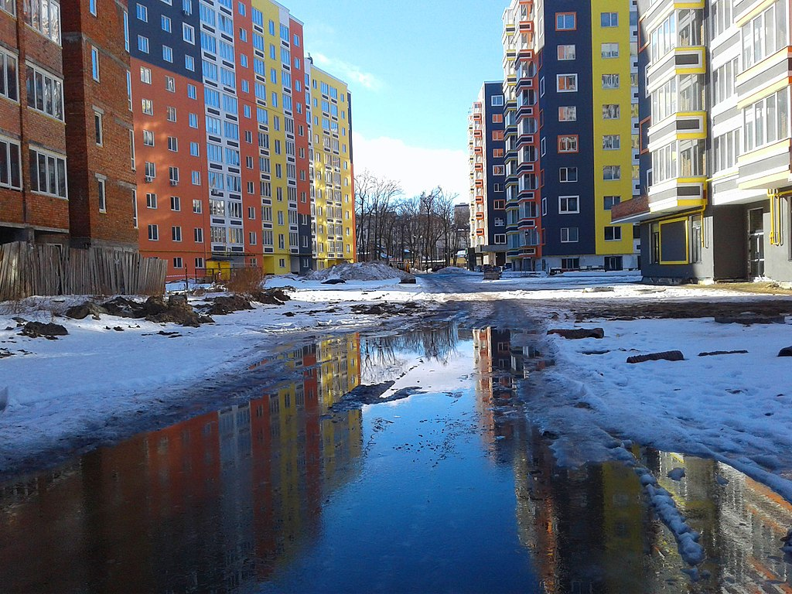

Зміст
- Етимологія
-
Історія
- Від давніх часів до початку XX століття
- Українські визвольні змагання
- Радянські часи
- Незалежна Україна
- Географія та клімат
- Місцевості
-
Місцева влада
- Самоврядування
- Очільники міста
Ірпíнь — місто України в передмісті Києва. Розташоване на річці Ірпінь. Центр Ірпінської міської громади. Найбільше місто у Бучанському районі Київської області.
24 березня 2022 року Указом Президента України з метою відзначення подвигу, масового героїзму та стійкості громадян, виявлених у захисті своїх міст під час відсічі збройної агресії Російської Федерації проти України, місту присвоєно почесну відзнаку «Місто-герой України»[2].
Існує декілька легенд, пов'язаних з виникненням назви Ірпінь. Зокрема, одна з них розповідає, що після хрещення Русі князівська донька Ярина втекла і молилася до Дажбога біля великого дуба. Але дружинники зрубали дуба, тільки пень залишився. Нібито на цьому місці й постало місто Ірпінь. Ця «легенда» явно є пізньою вигадкою, оскільки відштовхується від російськомовної назви міста і річки — «Ирпень», тоді як річка Ірпінь, від якої пішла й назва міста, була відома ще до тих часів, як російська мова з'явилася у цьому регіоні. До того ж немає жодних джерел, які вказують, що до хрещення Русі в когось із князів була донька Ярина. Інші гіпотези прив'язані до назви річки, що протікає біля Ірпеня та походить від слов'янського слова «рупа» — яма. Річка — це довгаста яма, заповнена водою. Ірпінський краєзнавець О. Передерій записав від старожилів, що річка Ірпінь раніше називалася Єрепень, тому що «єрепенилася» під час повені. Біля верхів'я Ірпеня в Житомирській обл. розташоване с. Яроповичі. Можливо, назва походить від того, що річка, розливаючись, ярилася й пінилася.
Недалеко від Ірпеня виявлені поселення лебедівської культури часів бронзової доби XI—IX століть до н. е., підгірцівської культури VI—III століть до н. е., давньоруської культури.
У часи Київської Русі у Приірпінні проходив кордон між двома східнослов'янськими союзами племен — полянами і древлянами. Під час монгольської навали ці місця були спустошені. Їхнє нове заселення почалося в лише в XVI столітті.
Місцеве населення брало участь у національній революції 1648—1676, у народному повстанні під проводом Семена Палія. У 1686—1793 роках річкою Ірпінь пролягав кордон між московськими та польськими володіннями в Україні.
1793 року, у зв'язку із другим поділом Речі Посполитої, Правобережна Україна, включаючи Приірпіння, входить до складу Російської імперії.
1803 року на місці північно-західного кута теперішнього Ірпеня згадується хутір Пилипів Потік.
У другій половині XIX століття на місці східного кута нинішнього Ірпеня виникла німецька колонія Северинівка.
У зв'язку з будівництвом у 1898 році залізниці Київ — Ковель біля залізничного мосту через річку Ірпінь виникло поселення — станція Ірпінь. 1902 року у газеті «Кіевлянинъ» згадується про роз'їзд Ірпінь[3], який поклав початок сучасному місту.
Селище Ірпінь будували без чіткого архітектурного плану. У лісі прорубали просіки. Так виникали вулиці, які називали лініями. Сприятливий клімат, зелені лісові масиви, чисте повітря створили усі передумови для організації розгалуженої санаторно-курортної зони. Ірпінь на час заснування мав кілька лісових складів, 2—3 дрібні крамниці, два базари. Для вирішення культурно-побутових проблем селища громадськість організувала товариство благоустрою Ірпеня. У 1909 році закладено і з 1911-го почали правити службу у Храмі Святої Трійці — найстарішому храмі Ірпеня[4].
У ході Української революції Ірпінь став частиною проголошеної ІІІ Універсалом Української Народної Республіки у складі адміністративно-територіальної одиниці Київ.
Під час Першою радянсько-української війни, у лютому 1918 року, коли Українська Центральна Рада поверталася до столиці, в Ірпені відбувалися бої Українських січових стрільців із захопившими Київ більшовицькими загонами. Ввечері 27 лютого група С. Петлюри зайняла Коростень, Тетерів і Бородянку. Ешелони з січовиками та гайдамаками рухалися максимально швидко, щоб у більшовиків не було часу знищити колію. Всі станції були зайняті з мінімальним спротивом: збільшовичені солдати розбігалися після кількох гарматних пострілів. До кінця дня січовики та гайдамаки зайняли ще одну залізничну станцію — Бучу. Далі наступ на Київ потрібно було продовжувати в пішому порядку — залізничний міст через Ірпінь контролювали більшовики.
Зранку 28 лютого українські вояки вивантажилися з вагонів. Гайдамацький курінь розпочав штурм більшовицьких позицій, січовики залишились у резерві. Вояки Кіквідзе відкрили по гайдамаках артилерійський вогонь, зупинили їхнє просування і самі перейшли у контрнаступ. Положення врятувала 1-а сотня Січового куреня на чолі з Р. Сушком, що атакувала більшовиків у багнети. У ближньому бою ворог був відкинутий. Січовики зайняли залізничний міст. У цей час 2-а сотня на чолі з Ів. Чмолою обійшла лівий фланг загону Кіквідзе у районі села Романівки (нині — південно-східний мікрорайон Ірпеня), змусивши більшовиків покинути і цю позицію. Бій тривав не довше години. Загін Кіквідзе був розгромлений, його рештки відступили. Значну роль у розгромі більшовиків відіграла українська артилерія, що придушила ворожі гармати. До кінця дня українські вояки розчистили більшовицькі укріплення. Шлях на Київ був вільний.
2 березня до міста вступили німецькі війська, уряд УНР і Українська Центральна Рада. У наступні дні розпочались бої за визволення Лівобережжя та Півдня України.
За результатами Другої радянської війни Ірпінь остаточно опинився під більшовицькою окупацією.
Зі встановленням радянської влади 1923 року Ірпінь увійшов до складу Гостомельського району Київської губернії, а від 1928 року — до складу Київської округи. Від 1932 року Ірпінь — у складі Київської області.
У роки Другої світової війни був окупований гітлерівцями з 24 серпня 1941 року по 6 листопада 1943 року. Під час окупації в районі Ірпеня діяв партизанський загін «Перемога або смерть». Ірпінь звільнений військами 74-ої стрілецької дивізії 38-ї армії Першого Українського фронту[5].
30 грудня 1956 року Ірпінь рішенням Київського облвиконкому було віднесено до категорії міст районного підпорядкування (у складі Києво-Святошинського району). Тоді в ньому жило 12 тисяч чоловік. Першим головою Ірпінського міськвиконкому був Іван Митрофанович Нужний. У місті здійснювалась газифікація і телефонізація. Указом Президії Верховної Ради Української РСР 30 грудня 1962 року Ірпеню надається статус міста обласного підпорядкування. На 1967 рік йому були адміністративно підпорядковані селища міського типу Буча (до 1 січня 2007 року), Ворзель, Гостомель, Коцюбинське.
Населення Ірпеня зростало в той час переважно за рахунок мігрантів. Серед них — багато ветеранів Другої світової війни, у тому числі Герої Радянського Союзу Петро Тананаєв, полковник Володимир Лихотворик, капітан Є. А. Кривий, пілот бомбардувальника в роки війни Надія Федутенко
1977 року завершено будівництво першого в Ірпені 9-поверхового будинку, 1986 року — споруджено перші в місті два 14-поверхові будинки. Обидва вони заселялися людьми, евакуйованими з району, що постраждав від аварії на Чорнобильській АЕС.
Мешканці Ірпеня, зокрема пожежники, також брали участь у ліквідації наслідків аварії на ЧАЕС. У Ірпені споруджено пам'ятник Герою Радянського Союзу чорнобильському пожежникові Володимирові Правику.
6 грудня 2015 року отець і Глава Української Греко-Католицької Церкви Блаженніший Святослав освятив у місті новоспоруджений храм Різдва Пресвятої Богородиці[6].
На виконання Закону України про декомунізацію рішенням 8-ї сесії Ірпінської міської ради від 20 лютого 2016 року перейменовано 26 вулиць міста[7].
З 24 лютого 2022 року місто почало страждати від російського вторгнення в Україну. 25 лютого 2022 року українські війська знищили російську колону, що прямувала до Ірпеня.[8][9]. 27 лютого українські війська повідомили, що російські сухопутні війська просунулися в Бучу, а потім прорвалися з Бучі в бік Ірпеня, тим самим розпочавши бій за Ірпінь.[10][11] Усередині міста зав'язався танковий бій, а українська піхота вела бойові дії з російськими ВДВ.[10][11] Міський голова Ірпеня Олександр Маркушин повідомив, що російські війська намагалися прорватися через місто, але отримали відсіч українськими Сухопутними військами та військами територіальної оборони, танкове підкріплення з Бучі. На ТРЦ «Жираф», розташованому між Бучею та Ірпенем, точилися жорстокі бої.
2 березня 2022 року два російські Су-25 завдали авіаудару в Ірпені. Дві ракети влучили в житловий будинок, загинула дитина та поранена жінка.[12][13][14] У свою чергу один із Су-25 був збитий. Під час ретельного огляду було виявлено бортовий номер RF-91961, який пізніше ідентифікував літак як Су-25СМ, що належав 18-му гвардійському десантно-штурмовому авіаційному полку Росії. Доля пілота невідома.[15][16]. Українські Сухопутні війська повідомили, що російські війська почали втрачати ініціативу в наступі, зазнаючи значних втрат та зупиняючись на «несприятливих рубежах».[17][18]. 3 березня 2022 року Київська обласна державна адміністрація повідомила, що гуманітарна допомога прямує в напрямку Бучі та Ірпеня, а також починається евакуація в обох містах. 206-й батальйон територіальної оборони евакуював понад 400 жінок і дітей з міста[19]. 6 березня Ірпінь зазнав обстрілів, в результаті яких загинуло 8 осіб, зокрема ціла родина з двома дітьми[20].
Бійці 72-гої окремої механізованої бригади імені Чорних Запорожців знищили окупантів, які прагнули прорватися до Києва. Завдяки цьому українські військові затиснули загарбників у котел у напрямку Ірпеня та довколишніх міст, продовжуючи відтісняти ворога від української столиці[21]. За заявою місцевої влади 28 березня звільнено від російських військ[22].
24 березня 2022 року Указом Президента України з метою відзначення подвигу, масового героїзму та стійкості громадян, виявлених у захисті своїх міст під час відсічі збройної агресії Російської Федерації проти України місту присвоєно почесну відзнаку «Місто-герой України»[23].
2 квітня 2022 року мобільний оператор Vodafone відновив зв'язок після запеклих боїв з російськими окупантами у місті Ірпінь завдяки обладнанню Starlink. Вперше в історії України й однією з перших у світі робота частини мережі мобільного оператора організована за допомогою супутникових технологій Starlink. З точки зору конвергенції технологій це другий в світі кейс після Японії (де оператор KDDI вже запустив схоже рішення), а з точки зору екстремальних умов — перший у світі.
Місто розташоване на півночі України, входить до складу Київської області. Розташоване в центральній частині області, на річці Ірпінь. Віддалене від Києва на 7 км. Має площу 110,83 км².
Клімат помірно континентальний, м'який, з достатнім зволоженням. Середня температура січня — 6°С, липня +19,5°С. Тривалість вегетаційного періоду 198—204 дні. Сума активних температур поступово збільшується з півночі на південь від 2480 до 2700°. За рік на території міста випадає 500—600 мм опадів, головним чином влітку[24].
Впродовж 2014—2016 років в Ірпені споруджено 5 парків та 5 скверів. Щороку висаджуються нові зелені насадження. Споруджується комплекс очистки питної води.
Ірпінь залізницею розділений на дві частини, кожна з яких має свої історичні кути.
Пилипів Потік — історичне урочище, північно-західний кут, розташований уздовж правого берега річки Буча від Гайдамацької вулиці до Університетської. Згадується як хутір у 1803 році.
Северинівка — історичний північно-східний кут Ірпеня. На початку XX сторіччя на території Северинівки уздовж річки Ірпінь і лінії залізниці Київ — Ковель залізничники побудували свою колонію. Будівництво велося без чіткого архітектурного плану. У лісі прорубували просіки, які перетворювалися на вулиці. Їх назвали лініями[25]. Згадкою про часи заснування міста є мікротопоніміка Ірпеня: Северинівська вулиця, Перша, Друга та інші лінії.
«Курортна» частина розташована на південному заході у сосновому лісі. Місцевість забудовували санаторіями, профілакторіями, оздоровчими дитячими таборами. Після Чорнобильської аварії деякі оздоровчі заклади закрили. На початку XXI століття сосновий ліс поступово вирубують, на місці якого ведеться будівництво житлових комплексів[26].
Місцеве самоврядування міста Ірпінь здійснюється Ірпінською міською радою, яка складається з 36 депутатів, з них 15 депутатів у шостому скликанні обрані від політичної партії «Нові обличчя».